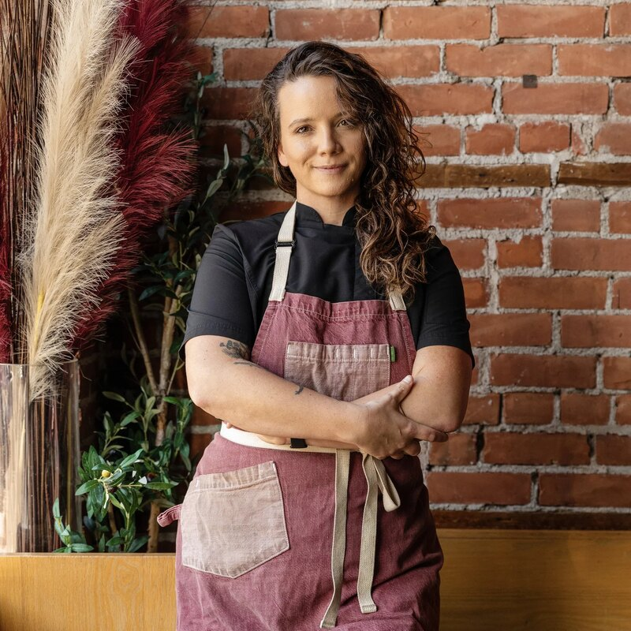
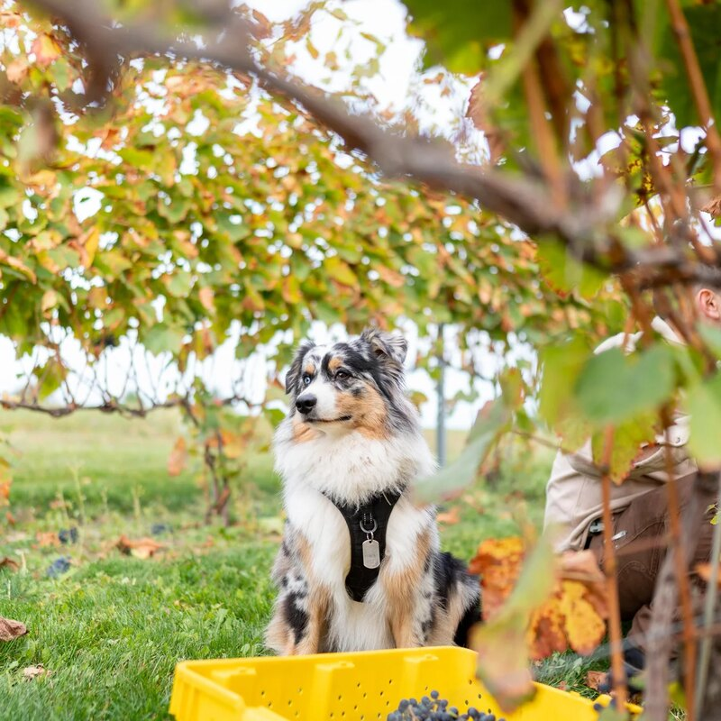

Cameron Rolka
Chef
Fine seafood, unfussy — a taste of the coast on Grand Traverse Bay.
Cameron Rolka and Sarah Welch made their name in Detroit with Marrow and Mink — kitchens known for whole-animal cooking, a serious seafood hand, and a refusal to take themselves too seriously.
Umbo is the smaller, sunnier idea: an oyster bar built for the long daytime lunches that summers up north are made for. A raw bar, a shelf of good conservas, a little caviar, and a room that feels like a postcard.
Chef

Chef & Partner

Quality Control
We buy the best we can find, do as little to it as possible, and pour something cold alongside.
That’s the whole plan.